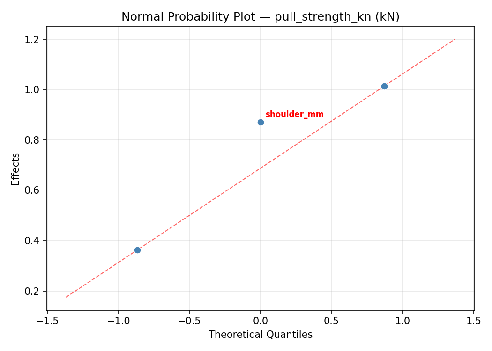
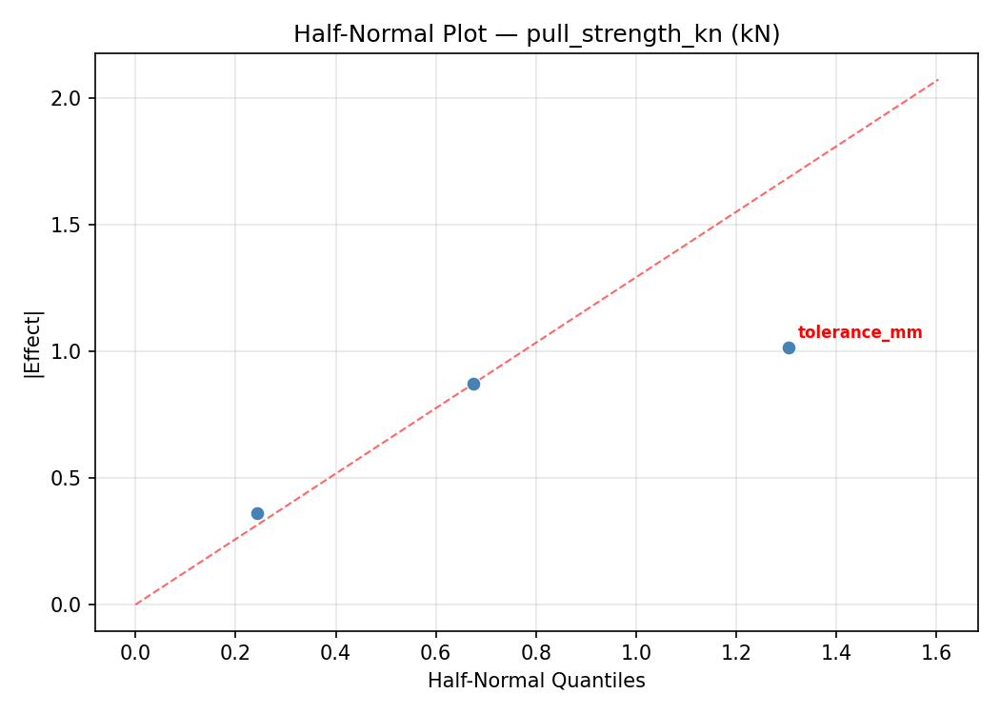
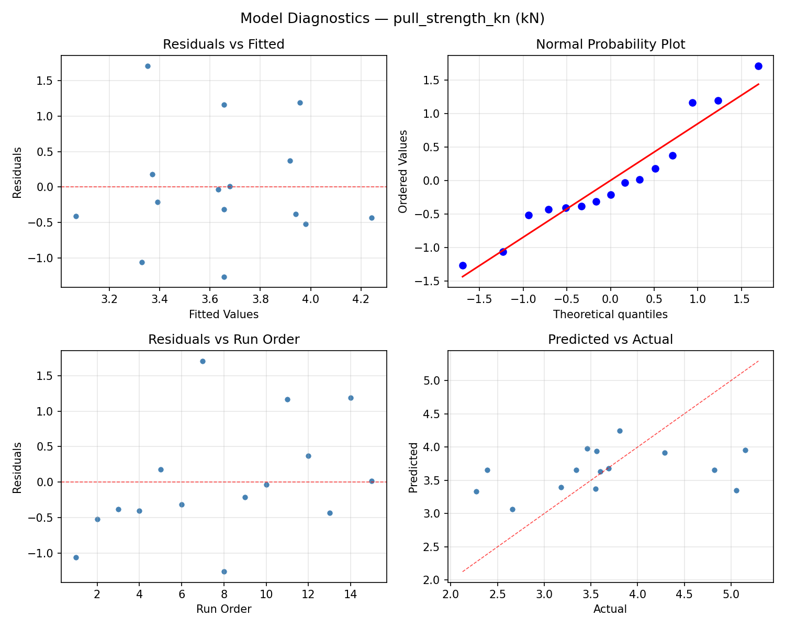
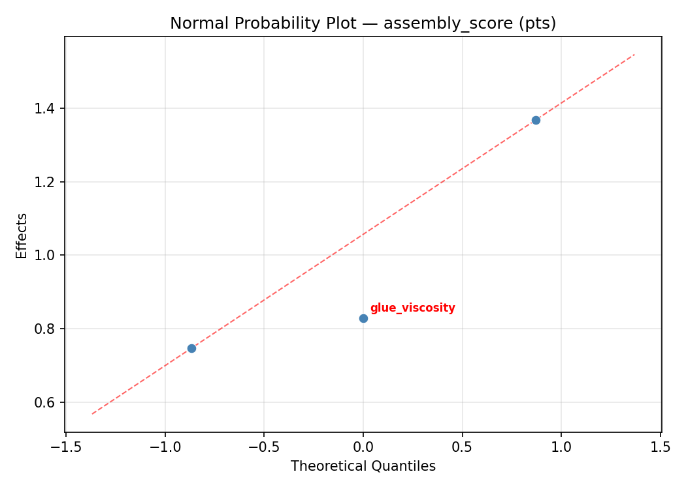
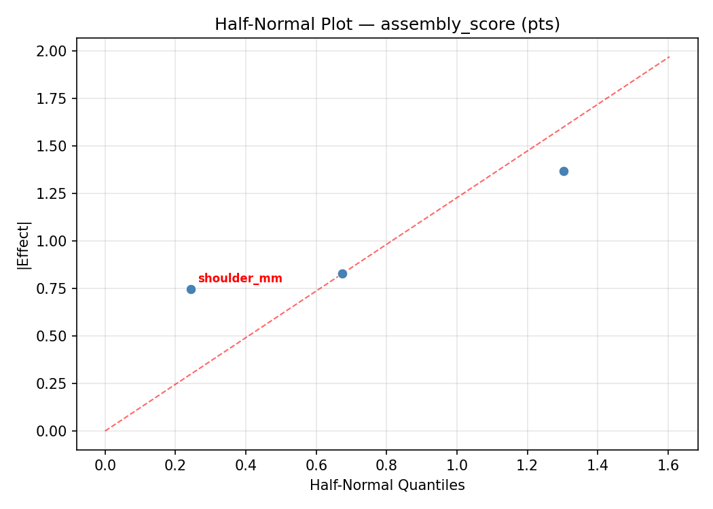
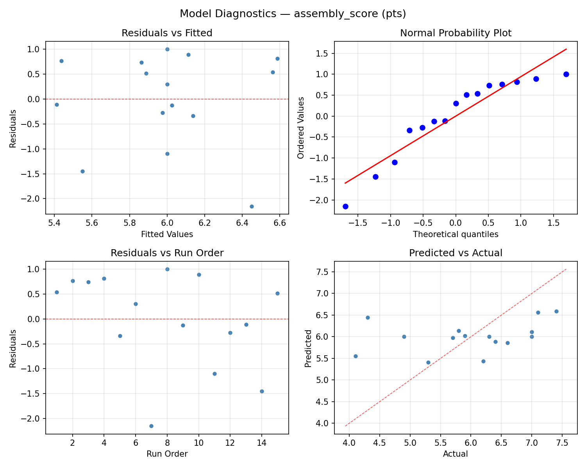

Summary
This experiment investigates mortise & tenon fit. Box-Behnken design to maximize joint strength and minimize assembly difficulty by tuning tenon thickness tolerance, shoulder depth, and glue type viscosity.
The design varies 3 factors: tolerance mm (mm), ranging from 0.05 to 0.5, shoulder mm (mm), ranging from 3 to 10, and glue viscosity (cP), ranging from 1000 to 8000. The goal is to optimize 2 responses: pull strength kn (kN) (maximize) and assembly score (pts) (maximize). Fixed conditions held constant across all runs include joint type = through_tenon, wood = white_oak.
A Box-Behnken design was chosen because it efficiently fits quadratic models with 3 continuous factors while avoiding extreme corner combinations — requiring only 15 runs instead of the 8 needed for a full factorial at two levels.
Quadratic response surface models were fitted to capture potential curvature and factor interactions. The RSM contour plots below visualize how pairs of factors jointly affect each response.
Key Findings
For pull strength kn, the most influential factors were glue viscosity (81.8%), tolerance mm (13.2%), shoulder mm (5.0%). The best observed value was 5.15 (at tolerance mm = 0.05, shoulder mm = 6.5, glue viscosity = 1000).
For assembly score, the most influential factors were glue viscosity (55.6%), tolerance mm (24.7%), shoulder mm (19.6%). The best observed value was 7.4 (at tolerance mm = 0.275, shoulder mm = 3, glue viscosity = 8000).
Recommended Next Steps
- Run confirmation experiments at the predicted optimal settings to validate the model.
- Consider whether any fixed factors should be varied in a future study.
Experimental Setup
Factors
| Factor | Low | High | Unit |
|---|
tolerance_mm | 0.05 | 0.5 | mm |
shoulder_mm | 3 | 10 | mm |
glue_viscosity | 1000 | 8000 | cP |
Fixed: joint_type = through_tenon, wood = white_oak
Responses
| Response | Direction | Unit |
|---|
pull_strength_kn | ↑ maximize | kN |
assembly_score | ↑ maximize | pts |
Configuration
{
"metadata": {
"name": "Mortise & Tenon Fit",
"description": "Box-Behnken design to maximize joint strength and minimize assembly difficulty by tuning tenon thickness tolerance, shoulder depth, and glue type viscosity"
},
"factors": [
{
"name": "tolerance_mm",
"levels": [
"0.05",
"0.5"
],
"type": "continuous",
"unit": "mm"
},
{
"name": "shoulder_mm",
"levels": [
"3",
"10"
],
"type": "continuous",
"unit": "mm"
},
{
"name": "glue_viscosity",
"levels": [
"1000",
"8000"
],
"type": "continuous",
"unit": "cP"
}
],
"fixed_factors": {
"joint_type": "through_tenon",
"wood": "white_oak"
},
"responses": [
{
"name": "pull_strength_kn",
"optimize": "maximize",
"unit": "kN"
},
{
"name": "assembly_score",
"optimize": "maximize",
"unit": "pts"
}
],
"settings": {
"operation": "box_behnken",
"test_script": "use_cases/202_mortise_tenon_fit/sim.sh"
}
}
Experimental Matrix
The Box-Behnken Design produces 15 runs. Each row is one experiment with specific factor settings.
| Run | tolerance_mm | shoulder_mm | glue_viscosity |
|---|
| 1 | 0.275 | 3 | 1000 |
| 2 | 0.275 | 6.5 | 4500 |
| 3 | 0.5 | 6.5 | 8000 |
| 4 | 0.5 | 6.5 | 1000 |
| 5 | 0.275 | 6.5 | 4500 |
| 6 | 0.275 | 6.5 | 4500 |
| 7 | 0.05 | 6.5 | 8000 |
| 8 | 0.5 | 3 | 4500 |
| 9 | 0.275 | 3 | 8000 |
| 10 | 0.5 | 10 | 4500 |
| 11 | 0.05 | 6.5 | 1000 |
| 12 | 0.275 | 10 | 8000 |
| 13 | 0.05 | 3 | 4500 |
| 14 | 0.05 | 10 | 4500 |
| 15 | 0.275 | 10 | 1000 |
Step-by-Step Workflow
1
Preview the design
$ python doe.py info --config use_cases/202_mortise_tenon_fit/config.json
2
Generate the runner script
$ python doe.py generate --config use_cases/202_mortise_tenon_fit/config.json \
--output use_cases/202_mortise_tenon_fit/results/run.sh --seed 42
3
Execute the experiments
$ bash use_cases/202_mortise_tenon_fit/results/run.sh
4
Analyze results
$ python doe.py analyze --config use_cases/202_mortise_tenon_fit/config.json
5
Get optimization recommendations
$ python doe.py optimize --config use_cases/202_mortise_tenon_fit/config.json
6
Multi-objective optimization
With 2 competing responses, use --multi to find the best compromise via Derringer–Suich desirability.
$ python doe.py optimize --config use_cases/202_mortise_tenon_fit/config.json --multi
7
Generate the HTML report
$ python doe.py report --config use_cases/202_mortise_tenon_fit/config.json \
--output use_cases/202_mortise_tenon_fit/results/report.html
Features Exercised
| Feature | Value |
|---|
| Design type | box_behnken |
| Factor types | continuous (all 3) |
| Arg style | double-dash |
| Responses | 2 (pull_strength_kn ↑, assembly_score ↑) |
| Total runs | 15 |
Analysis Results
Generated from actual experiment runs using the DOE Helper Tool.
Response: pull_strength_kn
Top factors: glue_viscosity (81.8%), tolerance_mm (13.2%), shoulder_mm (5.0%).
ANOVA
| Source | DF | SS | MS | F | p-value |
|---|
| Source | DF | SS | MS | F | p-value |
| tolerance_mm | 2 | 0.0843 | 0.0422 | 0.027 | 0.9738 |
| shoulder_mm | 2 | 0.0121 | 0.0060 | 0.004 | 0.9962 |
| glue_viscosity | 2 | 2.5175 | 1.2588 | 0.796 | 0.4838 |
| Lack | of | Fit | 6 | 5.1132 | 0.8522 |
| Pure | Error | 2 | 3.1621 | | |
| Error | 8 | 8.2753 | 1.5810 | | |
| Total | 14 | 10.8892 | 0.7778 | | |
Pareto Chart

Main Effects Plot

Normal Probability Plot of Effects

Half-Normal Plot of Effects

Model Diagnostics

Response: assembly_score
Top factors: glue_viscosity (55.6%), tolerance_mm (24.7%), shoulder_mm (19.6%).
ANOVA
| Source | DF | SS | MS | F | p-value |
|---|
| Source | DF | SS | MS | F | p-value |
| tolerance_mm | 2 | 0.4164 | 0.2082 | 0.064 | 0.9383 |
| shoulder_mm | 2 | 0.2879 | 0.1439 | 0.044 | 0.9568 |
| glue_viscosity | 2 | 1.7164 | 0.8582 | 0.265 | 0.7740 |
| Lack | of | Fit | 6 | 5.2526 | 0.8754 |
| Pure | Error | 2 | 6.4867 | | |
| Error | 8 | 11.7393 | 3.2433 | | |
| Total | 14 | 14.1600 | 1.0114 | | |
Pareto Chart

Main Effects Plot

Normal Probability Plot of Effects

Half-Normal Plot of Effects

Model Diagnostics

Response Surface Plots
3D surfaces fitted with quadratic RSM. Red dots are observed data points.
assembly score shoulder mm vs glue viscosity

assembly score tolerance mm vs glue viscosity

assembly score tolerance mm vs shoulder mm

pull strength kn shoulder mm vs glue viscosity

pull strength kn tolerance mm vs glue viscosity

pull strength kn tolerance mm vs shoulder mm

Multi-Objective Optimization
When responses compete, Derringer–Suich desirability finds the best compromise.
Each response is scaled to a 0–1 desirability, then combined via a weighted geometric mean.
Overall Desirability
D = 0.6268
Per-Response Desirability
| Response | Weight | Desirability | Predicted | Dir |
|---|
pull_strength_kn |
1.5 |
|
3.60 0.4653 3.60 kN |
↑ |
assembly_score |
1.5 |
|
7.00 0.8444 7.00 pts |
↑ |
Recommended Settings
| Factor | Value |
|---|
tolerance_mm | 0.5 mm |
shoulder_mm | 10 mm |
glue_viscosity | 4500 cP |
Source: from observed run #10
Trade-off Summary
Sacrifice = how much worse than single-objective best.
| Response | Predicted | Best Observed | Sacrifice |
|---|
assembly_score | 7.00 | 7.40 | +0.40 |
Top 3 Runs by Desirability
| Run | D | Factor Settings |
|---|
| #15 | 0.5790 | tolerance_mm=0.275, shoulder_mm=6.5, glue_viscosity=4500 |
| #3 | 0.5765 | tolerance_mm=0.05, shoulder_mm=6.5, glue_viscosity=8000 |
Model Quality
| Response | R² | Type |
|---|
assembly_score | 0.7208 | quadratic |
Full Multi-Objective Output
============================================================
MULTI-OBJECTIVE OPTIMIZATION
Method: Derringer-Suich Desirability Function
============================================================
Overall desirability: D = 0.6268
Response Weight Desirability Predicted Direction
---------------------------------------------------------------------
pull_strength_kn 1.5 0.4653 3.60 kN ↑
assembly_score 1.5 0.8444 7.00 pts ↑
Recommended settings:
tolerance_mm = 0.5 mm
shoulder_mm = 10 mm
glue_viscosity = 4500 cP
(from observed run #10)
Trade-off summary:
pull_strength_kn: 3.60 (best observed: 5.15, sacrifice: +1.55)
assembly_score: 7.00 (best observed: 7.40, sacrifice: +0.40)
Model quality:
pull_strength_kn: R² = 0.7334 (quadratic)
assembly_score: R² = 0.7208 (quadratic)
Top 3 observed runs by overall desirability:
1. Run #10 (D=0.6268): tolerance_mm=0.5, shoulder_mm=10, glue_viscosity=4500
2. Run #15 (D=0.5790): tolerance_mm=0.275, shoulder_mm=6.5, glue_viscosity=4500
3. Run #3 (D=0.5765): tolerance_mm=0.05, shoulder_mm=6.5, glue_viscosity=8000
Full Analysis Output
=== Main Effects: pull_strength_kn ===
Factor Effect Std Error % Contribution
--------------------------------------------------------------
glue_viscosity 1.1175 0.2277 81.8%
tolerance_mm 0.1807 0.2277 13.2%
shoulder_mm 0.0679 0.2277 5.0%
=== ANOVA Table: pull_strength_kn ===
Source DF SS MS F p-value
-----------------------------------------------------------------------------
tolerance_mm 2 0.0843 0.0422 0.027 0.9738
shoulder_mm 2 0.0121 0.0060 0.004 0.9962
glue_viscosity 2 2.5175 1.2588 0.796 0.4838
Lack of Fit 6 5.1132 0.8522 0.539 0.7641
Pure Error 2 3.1621 1.5810
Error 8 8.2753 1.5810
Total 14 10.8892 0.7778
=== Summary Statistics: pull_strength_kn ===
tolerance_mm:
Level N Mean Std Min Max
------------------------------------------------------------
0.05 4 3.6700 1.0932 2.3900 4.8200
0.275 7 3.7157 1.0921 2.2700 5.1500
0.5 4 3.5350 0.1448 3.3400 3.6900
shoulder_mm:
Level N Mean Std Min Max
------------------------------------------------------------
10 4 3.6475 1.0489 2.2700 4.8200
3 4 3.6150 1.0980 2.3900 5.0600
6.5 7 3.6829 0.8124 2.6600 5.1500
glue_viscosity:
Level N Mean Std Min Max
------------------------------------------------------------
1000 4 4.1800 0.6603 3.5600 5.0600
4500 7 3.6943 1.0155 2.3900 5.1500
8000 4 3.0625 0.5406 2.2700 3.4600
=== Main Effects: assembly_score ===
Factor Effect Std Error % Contribution
--------------------------------------------------------------
glue_viscosity 0.9000 0.2597 55.6%
tolerance_mm 0.4000 0.2597 24.7%
shoulder_mm 0.3179 0.2597 19.6%
=== ANOVA Table: assembly_score ===
Source DF SS MS F p-value
-----------------------------------------------------------------------------
tolerance_mm 2 0.4164 0.2082 0.064 0.9383
shoulder_mm 2 0.2879 0.1439 0.044 0.9568
glue_viscosity 2 1.7164 0.8582 0.265 0.7740
Lack of Fit 6 5.2526 0.8754 0.270 0.9104
Pure Error 2 6.4867 3.2433
Error 8 11.7393 3.2433
Total 14 14.1600 1.0114
=== Summary Statistics: assembly_score ===
tolerance_mm:
Level N Mean Std Min Max
------------------------------------------------------------
0.05 4 5.8750 0.8655 4.9000 7.0000
0.275 7 5.9143 1.3631 4.1000 7.4000
0.5 4 6.2750 0.3403 5.8000 6.6000
shoulder_mm:
Level N Mean Std Min Max
------------------------------------------------------------
10 4 5.9250 1.0079 4.9000 7.1000
3 4 5.8250 1.1325 4.3000 7.0000
6.5 7 6.1429 1.0784 4.1000 7.4000
glue_viscosity:
Level N Mean Std Min Max
------------------------------------------------------------
1000 4 5.4750 0.9535 4.3000 6.6000
4500 7 6.0857 1.2199 4.1000 7.4000
8000 4 6.3750 0.5123 5.9000 7.1000
Optimization Recommendations
=== Optimization: pull_strength_kn ===
Direction: maximize
Best observed run: #14
tolerance_mm = 0.05
shoulder_mm = 6.5
glue_viscosity = 1000
Value: 5.15
RSM Model (linear, R² = 0.2768, Adj R² = 0.0796):
Coefficients:
intercept +3.6553
tolerance_mm -0.1375
shoulder_mm +0.4787
glue_viscosity -0.3588
RSM Model (quadratic, R² = 0.8388, Adj R² = 0.5486):
Coefficients:
intercept +3.9433
tolerance_mm -0.1375
shoulder_mm +0.4787
glue_viscosity -0.3587
tolerance_mm*shoulder_mm -0.7925
tolerance_mm*glue_viscosity +0.7775
shoulder_mm*glue_viscosity +0.4600
tolerance_mm^2 -0.1867
shoulder_mm^2 -0.2392
glue_viscosity^2 -0.1142
Curvature analysis:
shoulder_mm coef=-0.2392 concave (has a maximum)
tolerance_mm coef=-0.1867 concave (has a maximum)
glue_viscosity coef=-0.1142 concave (has a maximum)
Notable interactions:
tolerance_mm*shoulder_mm coef=-0.7925 (antagonistic)
tolerance_mm*glue_viscosity coef=+0.7775 (synergistic)
shoulder_mm*glue_viscosity coef=+0.4600 (synergistic)
Predicted optimum (from quadratic model, at observed points):
tolerance_mm = 0.05
shoulder_mm = 10
glue_viscosity = 4500
Predicted value: 4.9262
Surface optimum (via L-BFGS-B, quadratic model):
tolerance_mm = 0.05
shoulder_mm = 10
glue_viscosity = 1000
Predicted value: 5.4883
Model quality: Good fit — general trends are captured, some noise remains.
Factor importance:
1. shoulder_mm (effect: 1.0, contribution: 48.5%)
2. glue_viscosity (effect: 0.7, contribution: 36.3%)
3. tolerance_mm (effect: 0.3, contribution: 15.1%)
=== Optimization: assembly_score ===
Direction: maximize
Best observed run: #4
tolerance_mm = 0.275
shoulder_mm = 3
glue_viscosity = 8000
Value: 7.4
RSM Model (linear, R² = 0.3000, Adj R² = 0.1090):
Coefficients:
intercept +6.0000
tolerance_mm +0.3375
shoulder_mm -0.4375
glue_viscosity +0.4750
RSM Model (quadratic, R² = 0.7843, Adj R² = 0.3961):
Coefficients:
intercept +5.6333
tolerance_mm +0.3375
shoulder_mm -0.4375
glue_viscosity +0.4750
tolerance_mm*shoulder_mm +0.5250
tolerance_mm*glue_viscosity -0.7000
shoulder_mm*glue_viscosity -0.8500
tolerance_mm^2 -0.0292
shoulder_mm^2 +0.3708
glue_viscosity^2 +0.3458
Curvature analysis:
shoulder_mm coef=+0.3708 convex (has a minimum)
glue_viscosity coef=+0.3458 convex (has a minimum)
tolerance_mm coef=-0.0292 negligible curvature
Notable interactions:
shoulder_mm*glue_viscosity coef=-0.8500 (antagonistic)
tolerance_mm*glue_viscosity coef=-0.7000 (antagonistic)
tolerance_mm*shoulder_mm coef=+0.5250 (synergistic)
Predicted optimum (from quadratic model, at observed points):
tolerance_mm = 0.275
shoulder_mm = 3
glue_viscosity = 8000
Predicted value: 8.1125
Surface optimum (via L-BFGS-B, quadratic model):
tolerance_mm = 0.05
shoulder_mm = 3
glue_viscosity = 8000
Predicted value: 8.9708
Model quality: Good fit — general trends are captured, some noise remains.
Factor importance:
1. glue_viscosity (effect: 1.0, contribution: 38.0%)
2. shoulder_mm (effect: 0.9, contribution: 35.0%)
3. tolerance_mm (effect: 0.7, contribution: 27.0%)